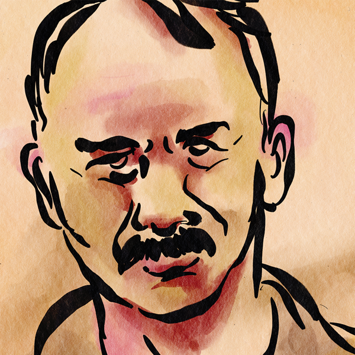
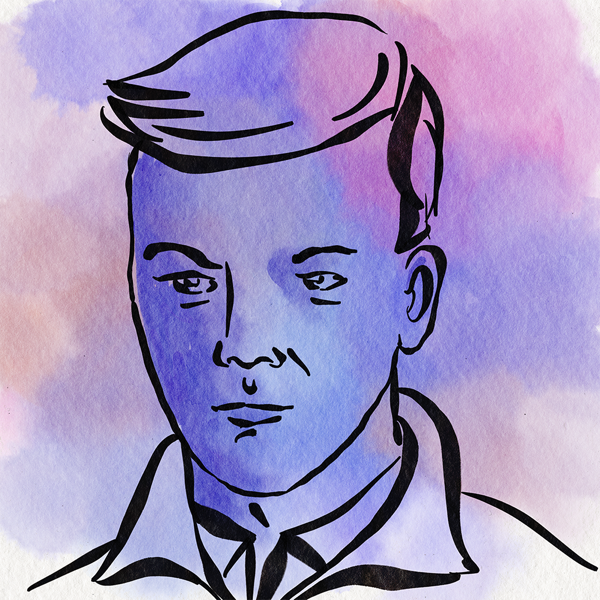
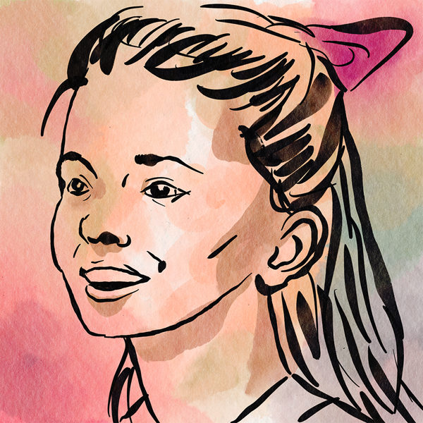

12th April, 1948
London
Dear Miss Delphine,
I trust this correspondence finds you in good health and that the spring air is proving a welcome relief
after the winter’s chill. I must apologise for the sudden nature of this letter, as we have never been
formally introduced; however, I was given your name by a mutual acquaintance in Oxford who spoke with
great conviction of your unique gifts. He assured me that where the conventional authorities reach their
limit, your investigation begins. It is that hope, perhaps a desperate one, that compels me to write to
you today.
They told me it was the war. That my father, my sister Lune... that they were just casualties of the
occupation. But I know better now. They were gone long before the Japanese landed.
I was stuck here in London during the blitz, unable to reach them. My father, Jeremiah, had been running
the
Goodwill Tobacco Plantation in North Borneo for decades. It was our paradise. Now
they say it's a graveyard.
I've spent every penny of my inheritance chasing ghosts. Letters to the colonial office, bribes to
sailors... and this is all I have. A box of scraps. A map. Some photos.
You are a Sensitive I am told. That's what they call you people? Please. I need to know what happened to
them. Access the memories attached to these items. Find the truth.
Enclosed are the few photos I managed to recover.



+7 Others
The only thing I know for sure is what little the colonial office told me:
"Jeremiah Goodwill was alone in the study at 16:00 on Tuesday 16th
December 1941, when he placed a telephone call to the local authorities regarding the arrival of an
unannounced and unexpected guest."
Please help me put them to rest.
- J. Goodwill Jr.